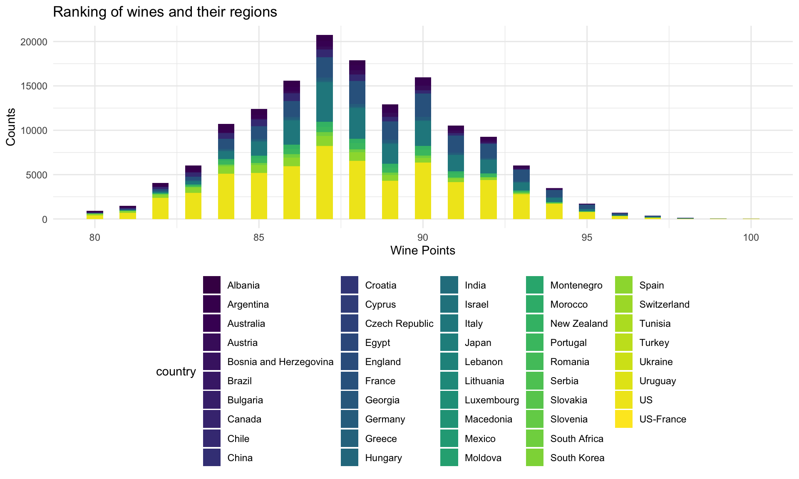
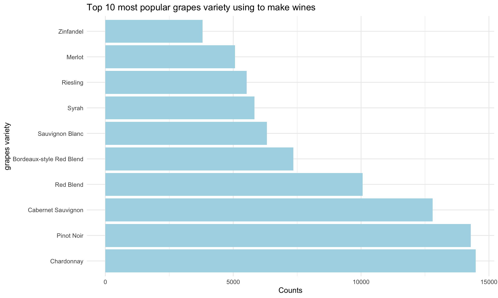

Based on our dataset, England (92.89) has the highest average wine ranking points around the world and it is much higher than the second country which is Austria (89.28). Countries with the lowest average wine points are South Korea, Montenego, China, Brazil.
load("./data/wine150_tidy")
wine150_tidy %>%
select(country, points_avg_country) %>%
mutate(country = fct_reorder(country, desc(points_avg_country))) %>%
unique() %>%
mutate(text_label = str_c("Country: ", country, "\nAverage Points: ", points_avg_country)) %>%
plot_ly(
x = ~country, y = ~points_avg_country, color = ~factor(country), text = ~text_label,
type = "bar", colors = "viridis") %>%
layout(
xaxis = list(title = "Country"),
yaxis = list(title = "Average Wine Points", range = (c(80,92))),
title = "Average Wine Points of Countries Around the Globe")In this graph, we plot the top 30 winery based on their wine ranking points. Some wineries have wines ranking within a very large range. For example, Tenuta dell’Ornellaia has wine with point 100 and also has wine with ranking point 86. From boxplot, we can see not only the average point of wines a winery made, but also its median, q1, q3 and range. Some wineries have more stable outputs of products.
load("./data/wine150_tidy")
wine150_tidy %>%
select(points, country, winery, variety, points_avg_variety, points_avg_winery) %>%
mutate(winery = fct_reorder(winery, desc(points_avg_winery))) %>%
filter(as.numeric(winery) <= 30) %>%
arrange(winery) %>%
plot_ly(
x = ~winery, y = ~points, color = ~factor(winery),
type = "box", colors = "viridis") %>%
layout(
xaxis = list(title = "Winery"),
yaxis = list(title = "Wine Points"),
title = "Top 30 Winery: Highest Professional Recognition")Some professional reviewers gave rankings to more than 150,000 types of wines based on their regions, prices, tastes, variety and winery. From the histogram we have plotted, we can see that the distribution of rankings of wines is close to normal distribution and the mean is around 87.8885274.
ggplot(wine_df, aes(x = points,fill=country)) +
geom_histogram(binwidth = 0.5) +
labs(
title = "Ranking of wines and their regions",
x = "Wine Points",
y = "Counts"
)
In our dataset, there are also records of the types of grapes used of a bottle of wine. The top 10 most famous grapes variety used by wine makers are: Chardonnay, Pinot Noir, Cabernet Sauvignon, Red Blend, Bordeaux-style Red Blend, Sauvignon Blanc, Syrah, Riesling, Merlot, Zinfandel. Wine lovers can pay more attention to these grapes types while buying wines that are familiar.
wine150_tidy %>%
arrange(variety, points) %>%
group_by(variety) %>%
mutate(
number = n()) %>%
select(variety,number) %>%
unique() %>%
plot_ly(x = ~variety,y = ~number,
type = "bar", colors = "viridis") %>%
layout(
xaxis = list(title = "grapes variety"),
yaxis = list(title = "counts"),
title = "Grapes variety used to make wines" )grapes = within(wine_df, variety <- factor(variety, levels=names(sort(table(variety), decreasing=TRUE)[1:10]))) %>%
drop_na(variety)
ggplot(grapes, aes(x = variety)) +
geom_bar(fill="lightblue") +
labs(
title = "Top 10 most popular grapes variety using to make wines",
x = "grapes variety",
y = "Counts"
) +
coord_flip()